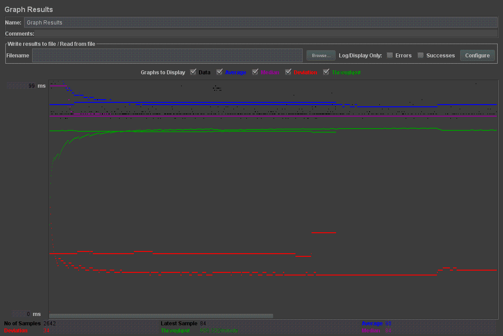
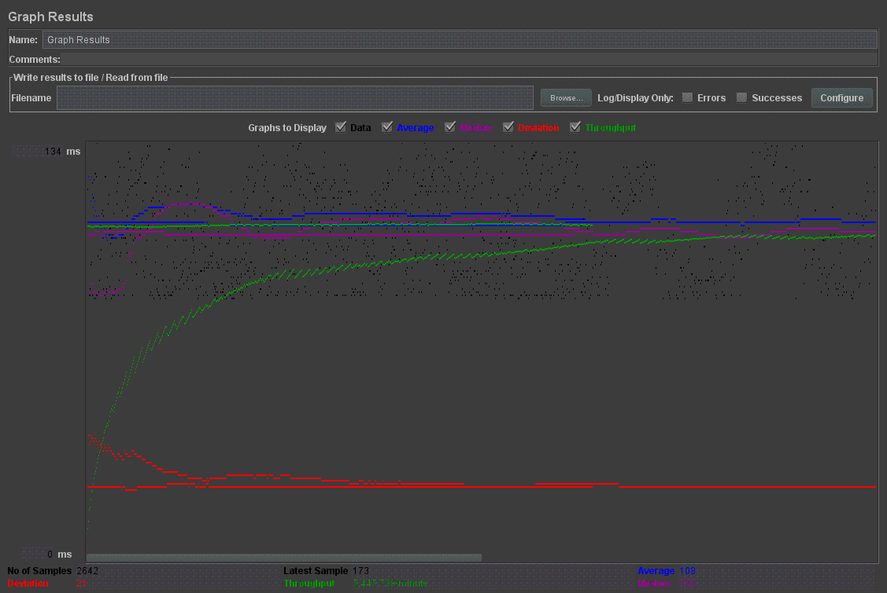
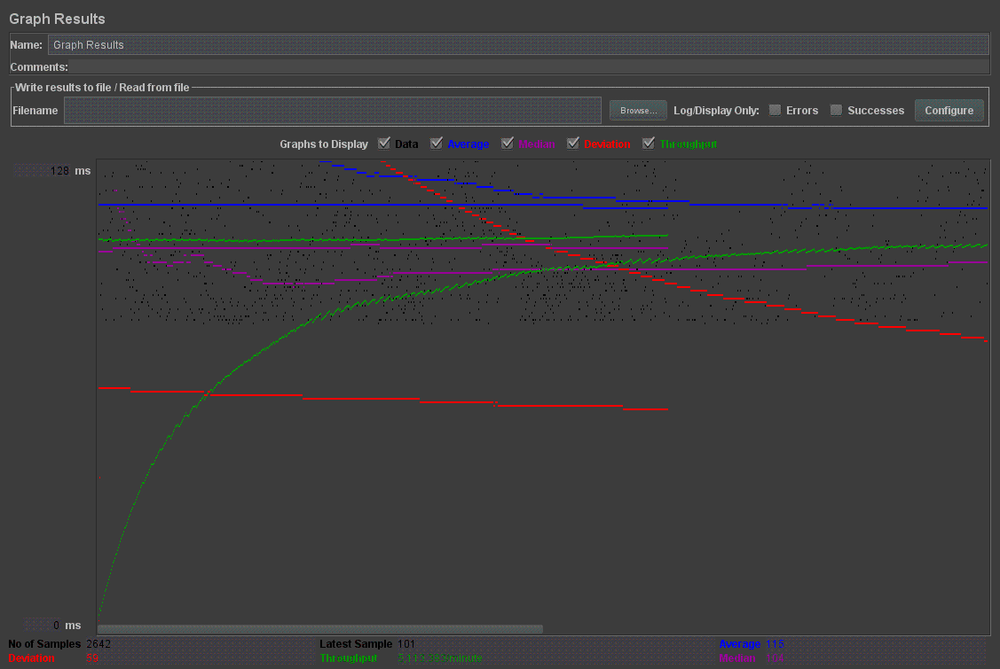
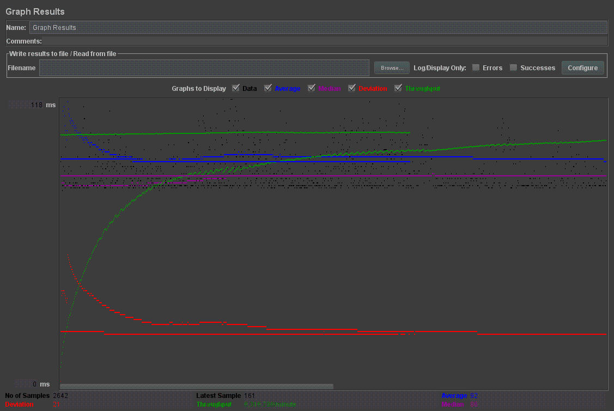
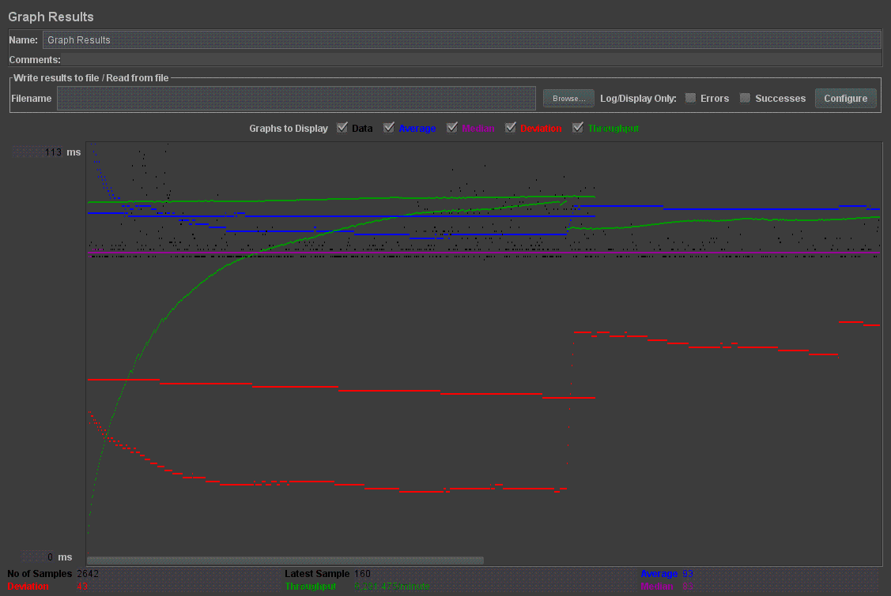
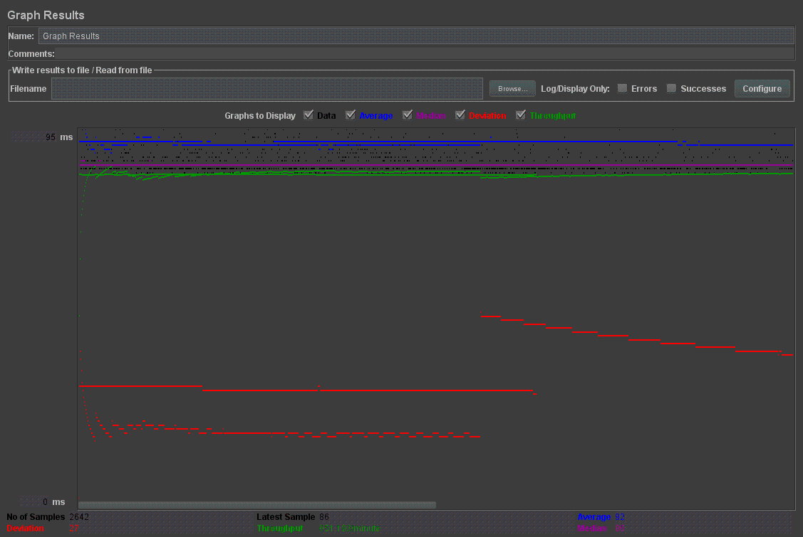
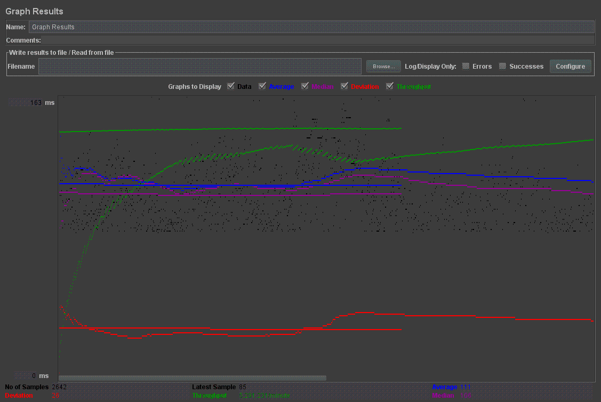
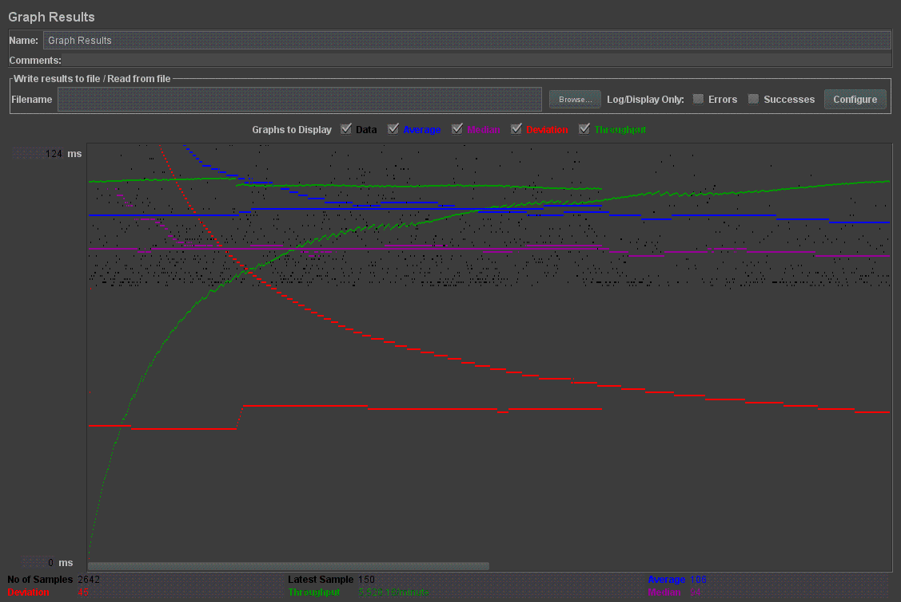
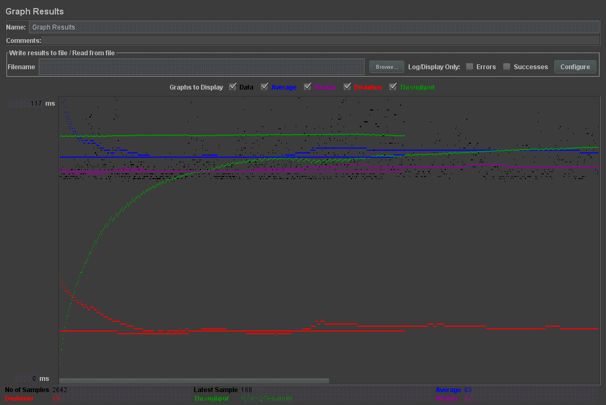

| Single-instance version cases | Graph Results Screenshot | Average Query Time(ms) | Average Search Servlet Time(ms) | Average JDBC Time(ms) | Analysis |
| Case 1: HTTP/1 thread |  | 90 | 7.398103797501893 | 7.41113737511003 | The throughput was 660.332/minute. The average query time was however lower than the 10 threads. |
| Case 2: HTTP/10 threads |  | 108 | 13.531838705904619 | 13.528705904619222 | The throughput was 6,291.47/minute. This was about 10 times more than 1 thread, which is proportional. Additionally, the average times for the queries increased. |
| Case 3: HTTPS/10 threads |  | 115 | 14.123946737320212 | 14.321673732021211 | The throughput was 5,113.383/minute. Every measure was slower than the HTTP 10 thread trial, as expected because the secure connection in general is slower for additional security checking. |
| Case 4: HTTP/10 threads/No prepared statements |  | 92 | 7.0539358001514 | 7.0521152101445 | The throughput was 6,316.796/minute. This was quicker than the original HTTP/10 thread trial as without prepared statements there is only one query being executed/run instead of multiple updates. However, this is much less secure than using prepared statements. |
| Case 5: HTTP/10 threads/No connection pooling |  | 93 | 6.745894900795153 | 6.789490079513500 | The throughput was 6,291.475/minute, almost the same as the original HTTP/10 thread trial. The query times however were about the same, if anything a little quicker. |
| Scaled version cases | Graph Results Screenshot | Average Query Time(ms) | Average Search Servlet Time(ms) | Average JDBC Time(ms) | Analysis |
| Case 1: HTTP/1 thread |  | 93 | 7.60966435011355 | 7.60955435021001 | The throughput was 651.193/minute. These measures are comparative to the port 8080 trial of HTTP/1 thread, just a tad slower. |
| Case 2: HTTP/10 threads |  | 111 | 19.608223119227855 | 19.6122238911222055 | The throughput was 5,291.291/minute. This was suprisingly much slower than I expected. |
| Case 3: HTTP/10 threads/No prepared statements |  | 106 | 10.285880684051397 | 10.288881814100392 | The throughput was 5,528.18/minute. This was quicker than the HTTP/10 thread and the search/JDBC times improved dramatically. |
| Case 4: HTTP/10 threads/No connection pooling |  | 93 | 6.1610139386595995 | 6.1601139886225990 | The throughput was 6,310.258/minute. This was quicker than any of the other port 80 (scaled) tests. |